British Empire — Reference Capture Review
A New World · ANWBritish · 17 surfaces
This is the reference civ — used to verify that the
orchestrator's pipeline produces correct screenshots before fanning out
to the other 39 civs.
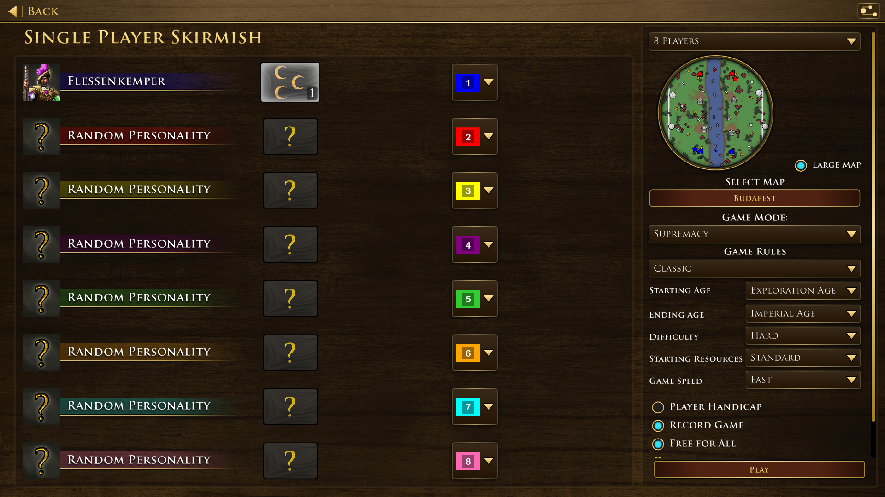
Lobby — civ picker / flag 01_lobby.png · 3712KB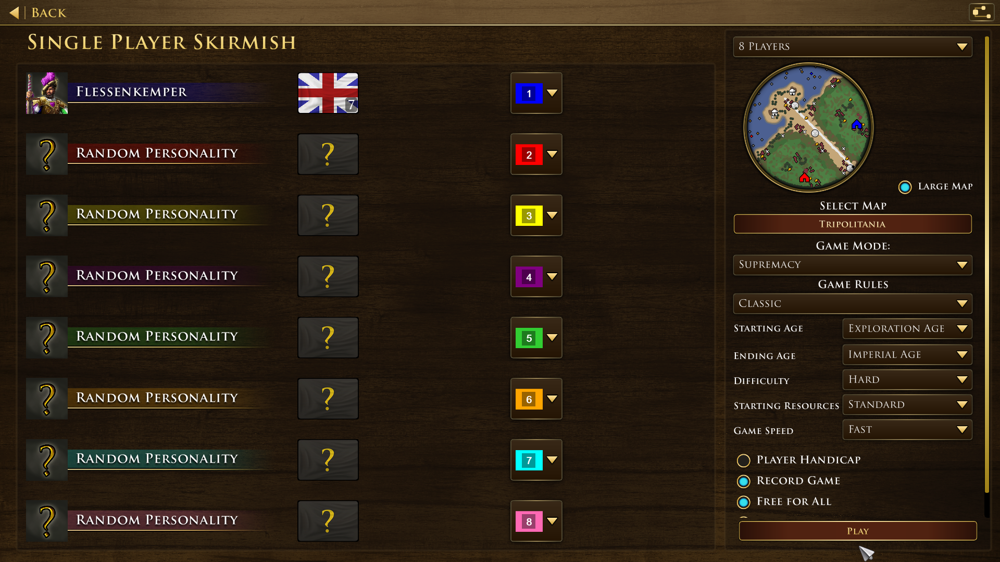
Loading screen 02_loading.png · 4118KB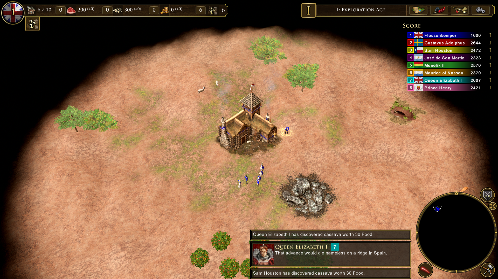
In-game HUD (Age 1) 03_hud.png · 4831KBHome City panel 04_homecity_panel.png · 5326KBTech tree (early game) 05_tech_tree.png · 4103KBDiplomacy screen 06_diplomacy.png · 3024KB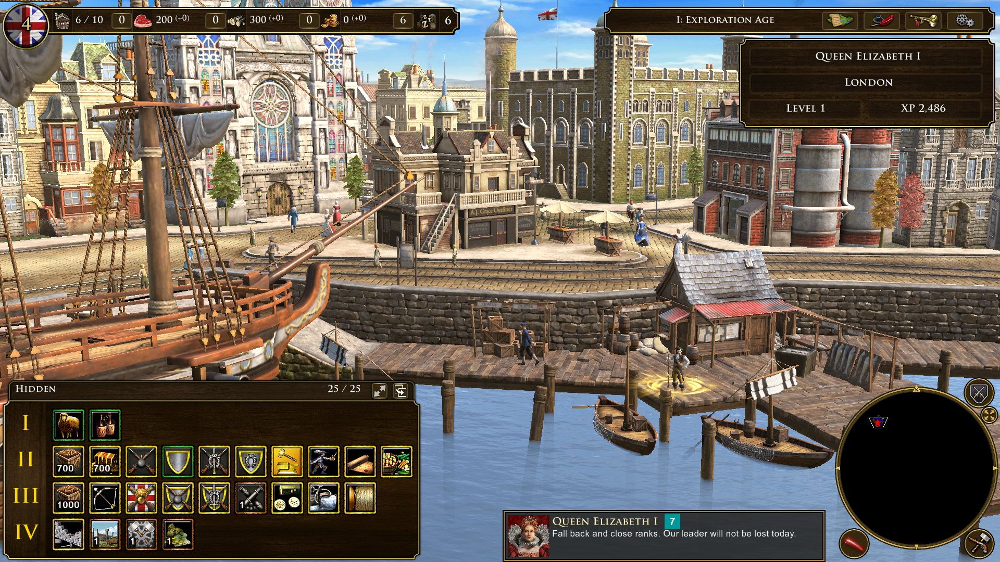
AI Home City (via Diplomacy) 06b_ai_homecity_via_diplo.png · 5380KB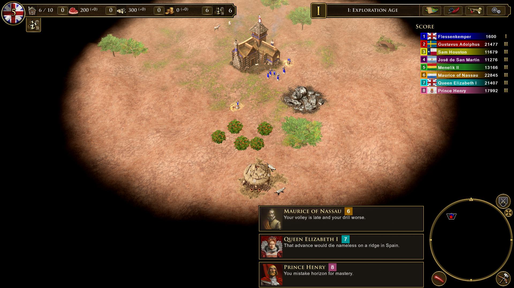
Scoreboard + AI banter 07_scoreboard_with_banter.png · 3774KBESC pause menu 08_esc_menu.png · 5211KB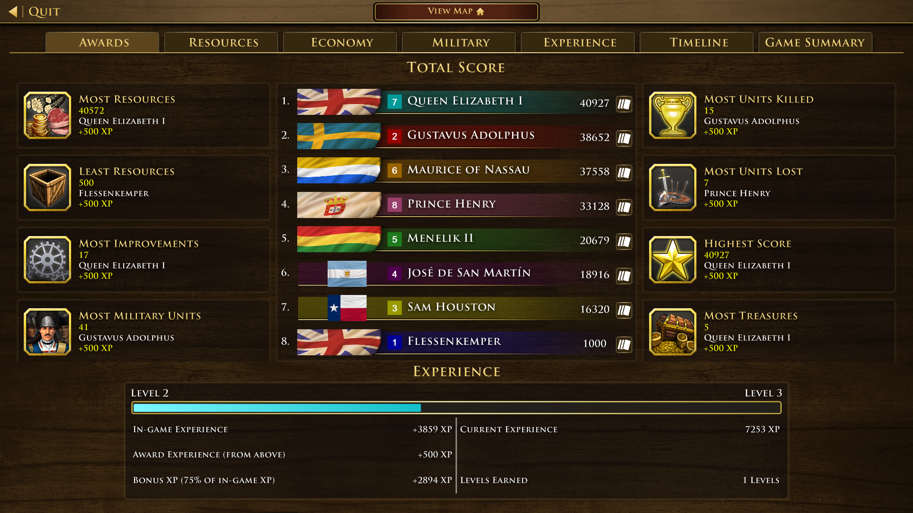
Post-game results 09_postgame_results.png · 3789KB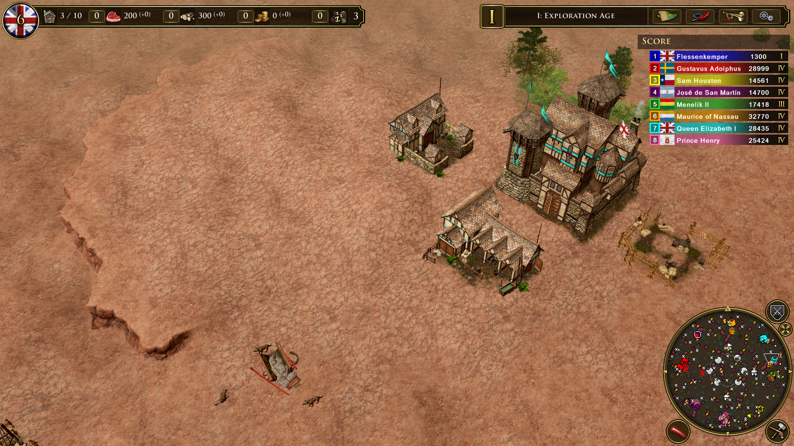
British AI base (overhead) 10_british_ai_base.png · 5788KB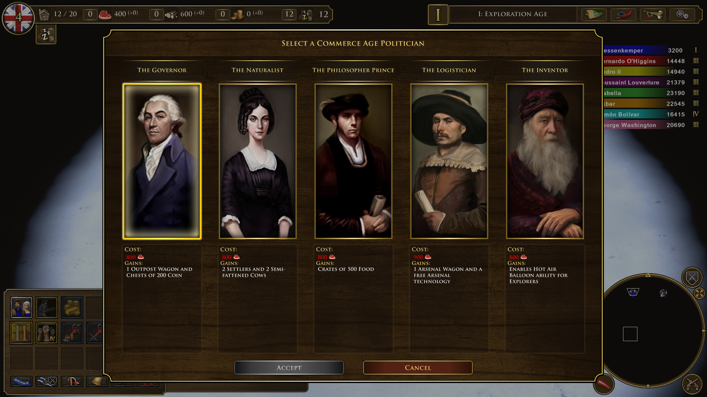
Age 2 — Colonial politician select 15_age_up_colonial.png · 3683KB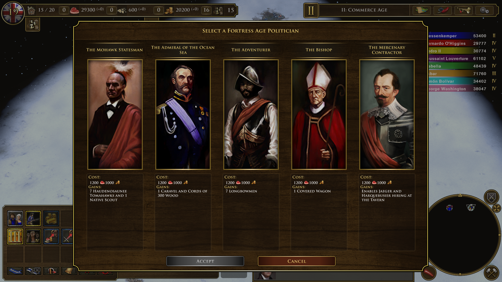
Age 3 — Fortress politician select 16_age_up_fortress.png · 3892KB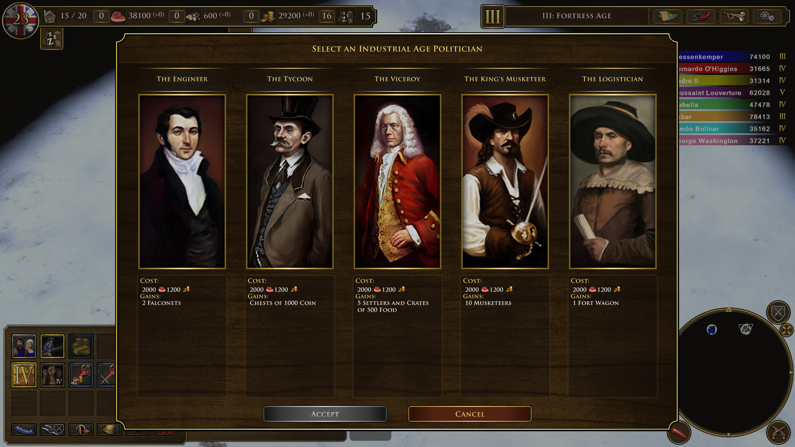
Age 4 — Industrial politician select 17_age_up_industrial.png · 3913KB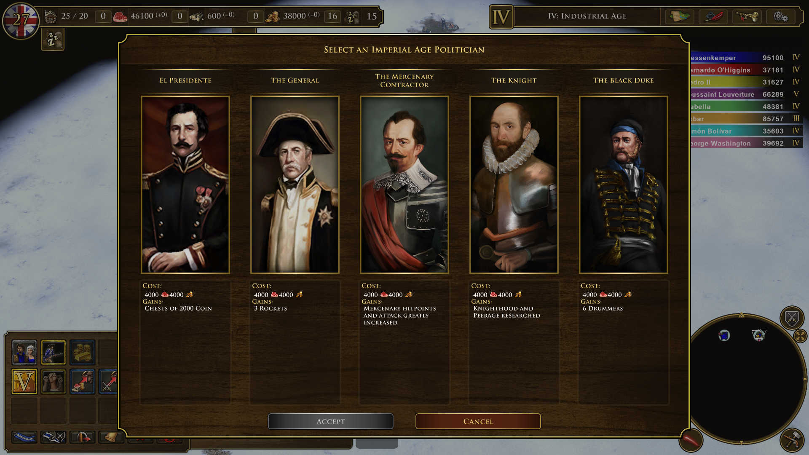
Age 5 — Imperial politician select 18_age_up_imperial.png · 3893KB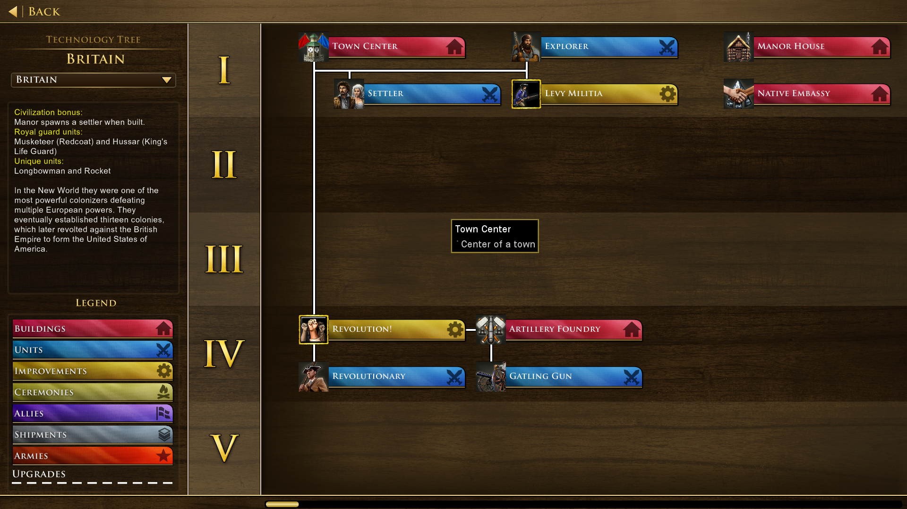
Tech tree (late game, all ages unlocked) 19_tech_tree.png · 4091KB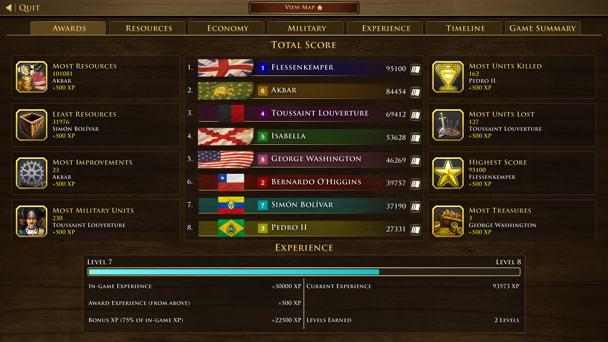
Post-game awards (final tab) 20_postgame_awards.png · 3788KB